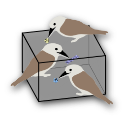

Filaments are traced centrelines (e.g. microtubules, actin) of objects declared as filaments (Edit Object Types → Is Filament). Each filament set is drawn as one tube per filament, coloured by its filament ID; picks sampled from a filament carry the same ID and colour.
Colour and transparency: copick filament style color object draws all tubes in the object's colour instead (color instance switches back), and copick filament style transparency percent makes the tubes transparent. Instance colours take their alpha from the object's colour, so the transparency is the same in both modes; it reduces the alpha of the object's colour (0 keeps it, 100 hides the tubes). Both settings apply to all filament sets and are remembered; control points stay opaque. The Copick Annotate window has the same controls (Colour by instance above the filament list, Transparency). Without options the command reports the current style.
Tracing: copick filament trace on binds the right mouse button to trace copick filament. Click on the shown tomogram plane (single plane, orthoplanes or tilted slab) to add a control point to the active filament; drag a control point to move it; shift-click a control point to remove it. The centreline is a centripetal Catmull-Rom curve through the control points, regenerated by copick after every edit, so every tool reproduces the same curve and the control points are kept in the file. Filaments fitted as B-splines keep their knots: their control points can be moved but not added or removed until they are converted with copick filament convert.
Cutting: copick filament cut on (the Cut button of the Copick Edit toolbar or the Copick Annotate window, shortcut cf) binds the right mouse button to cut copick filament. Click on a filament where it crosses the shown tomogram plane to split it in two there: the first piece keeps the filament's ID, the second gets the next free ID, and both keep its polarity, score, radius and metadata. Catmull-Rom and linear filaments are split between their control points, with the cut point added as the end of one piece and the start of the other, so all other control points stay where they were; a click within one step of a control point splits at that control point. B-spline fits are split along their centreline and each piece gets Catmull-Rom control points derived from it. A cut too close to an end of the filament is refused. copick filament cut at x,y,z cuts the filament passing closest to that point (Angstrom), or filament instanceId, without the mouse.
Joining: copick filament join (the Join button of the Copick Edit toolbar or the filament list's join button in the Copick Annotate window, shortcut jf) joins filaments end to end: starting from the target (the current filament of the list, or target id), the filament whose end is nearest to either end of the chain is attached there, reversed if needed, until all are joined. The target keeps its ID, direction, polarity, score, radius and metadata; the others are removed. The joined curve is Catmull-Rom (linear if all parts are linear) through all control points. Without IDs, the selected filaments are joined.
Selecting filaments: the 3D view and the Copick Annotate window's filament list share one selection. Ctrl-click a filament's tube (Shift+Ctrl-click to add more) and its row is selected; select rows and their tubes are selected. Selecting a single filament makes it the active one. select clear (or Ctrl-click on empty space) clears both.
Undo: every filament edit (adding, moving, deleting a control point, a whole drag, new / cut / join / reverse / delete / convert filament) is a step on ChimeraX's undo stack. Undo and redo it with Edit → Undo / Redo, Cmd+Z / Shift+Cmd+Z (Ctrl+Z / Ctrl+Y on Windows and Linux) or the undo / redo commands. Undoing a step shows the filament set it belongs to. While tracing, ChimeraX keeps at least 100 undo steps; the steps of a set are dropped when it is closed.
| action | meaning |
| new | Start a new filament (the next free ID) and make it active. |
| select id | Make filament id active (new control points go there). |
| go id | Make filament id active and focus the view on it (what the filament stepper below the Filaments table does). |
| focus [id] | Move the view to the middle of a filament. |
| next / previous | Step through the filaments and focus them. |
| reverse [id] | Reverse the point order (polarity) of a filament. |
| delete [id] | Delete a filament. |
| convert [id] | Convert a B-spline fit to an editable Catmull-Rom curve. |
| style | copick filament style: colour by instance or by object, and the tubes' transparency (all sets, remembered). |
| save | Save the active set. With pickSpacing, picks are also sampled every Å along each filament (+Z along the filament, instance ID = filament ID); they replace the whole picks set of the same object, user and session. Session 0 (tool output) cannot be written. |
Examples:
copick open filaments microtubule:tracer/1
copick new filaments microtubule
copick filament trace on
copick filament save sessionId manual-2 pickSpacing 82
copick filament style color object transparency 50
The Filaments tab, the Copick Edit toolbar tab and the shortcuts tf cf nf fn fp rv jf xf run the same commands.
See also: copick instance, copick open / show / hide, Copick URIs.